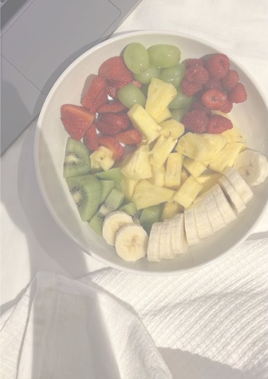

Weight Management
High-Protein Greek Yogurt Bowl
A filling, high-protein breakfast that keeps hunger away for hours, no cooking required.
Ingredients & Instructions
Ingredients
- 1 cup plain Greek yogurt
- 1 tbsp peanut butter
- 1/2 banana, sliced
- 1 tbsp chia seeds
- Cinnamon, to taste
Instructions
- Spoon the yogurt into a bowl.
- Swirl in the peanut butter.
- Top with banana slices, chia seeds, and a dash of cinnamon.